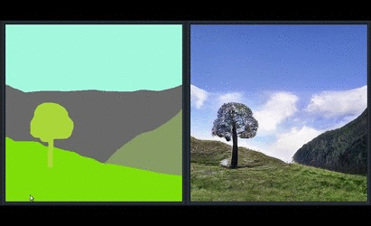
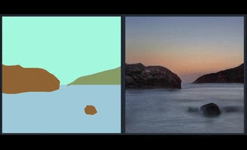

Semantic Image Synthesis with Spatially-Adaptive Normalization
Taesung Park Ming-Yu Liu Ting-Chun Wang Jun-Yan Zhu
UC Berkeley NVIDIA MIT
in CVPR 2019 (Oral)
Paper | Code | Online Demo App

|  |  |
Abstract
We propose spatially-adaptive normalization, a simple but effective layer for synthesizing photorealistic images given an input semantic layout. Previous methods directly feed the semantic layout as input to the network, which is then processed through stacks of convolution, normalization, and nonlinearity layers. We show that this is suboptimal because the normalization layers tend to wash away semantic information. To address the issue, we propose using the input layout for modulating the activations in normalization layers through a spatially-adaptive, learned transformation. Experiments on several challenging datasets demonstrate the advantage of the proposed method compared to existing approaches, regarding both visual fidelity and alignment with input layouts. Finally, our model allows users to easily control the style and content of synthesis results as well as create multi-modal results.
Paper
arxiv, 2019.
Citation
Taesung Park, Ming-Yu Liu, Ting-Chun Wang, and Jun-Yan Zhu.
"Semantic Image Synthesis with Spatially-Adaptive Normalization", in CVPR, 2019.
Bibtex
Code
Video of Interactive Demo App (GauGAN) |
Introduction of SPADE at GTC 2019 |
Brief Description of the Method
In many common normalization techniques such as Batch Normalization (Ioffe et al., 2015), there are learned affine layers (as in PyTorch and TensorFlow) that are applied after the actual normalization step. In SPADE, the affine layer is learned from semantic segmentation map. This is similar to Conditional Normalization (De Vries et al., 2017 and Dumoulin et al., 2016), except that the learned affine parameters now need to be spatially-adaptive, which means we will use different scaling and bias for each semantic label. Using this simple method, semantic signal can act on all layer outputs, unaffected by the normalization process which may lose such information. Moreover, because the semantic information is provided via SPADE layers, random latent vector may be used as input to the network, which can be used to manipulate the style of the generated images.
Comparison to Existing Methods
SPADE outperforms existing methods on the COCO-Stuff dataset, which is more challenging than the Cityscapes dataset due to more diverse scenes and labels. The images above are the ones authors liked.
Applying on Flickr Images
Since SPADE works on diverse labels, it can be trained with an existing semantic segmentation network to learn the reverse mapping from semantic maps to photos. These images were generated from SPADE trained on 40k images scraped from Flickr.
Code and Trained Models
Please visit our github repo.
Online Demo
We released an online demo of GauGAN, our interactive app that generates realistic landscape images from the layout users draw. The model was trained on landscape images scraped from Flickr.com. We released an online demo that has the same features. Please visit our online demo page.
Acknowledgement
We thank Alyosha Efros and Jan Kautz for insightful advice. Taesung Park contributed to the work during his internship at NVIDIA. His Ph.D. is supported by Samsung Scholarship.